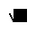
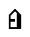
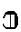
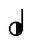

Sotto-pagine
- sestimale
Come leggere un sistema di numerazione in base 6.
- nembo
I miei compiti
parisinaDizionario segreto.
Scritture diverse
sitelen pona
sitelen ni li sitelen [sitelen-pona]
Testo rosato
kwesto 'e testo roSato
Scarica carattere rosato (tff), o importa rosato con pentacom.jp
Testo in Lingua Italiana dei Segni
Nota: se il sito è in modalità notte, i colori sono invertiti, e il dorso della mano è bianco.



